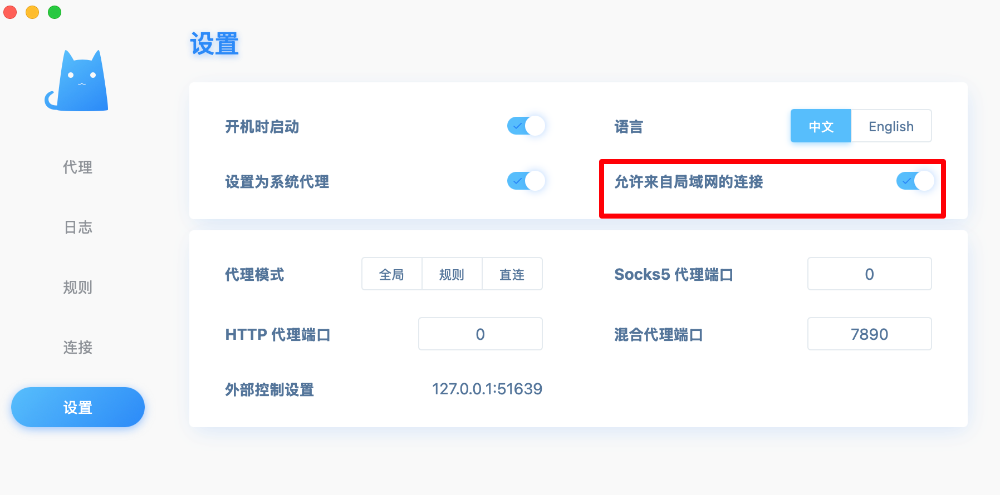
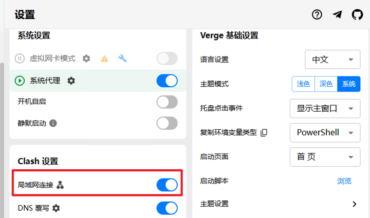
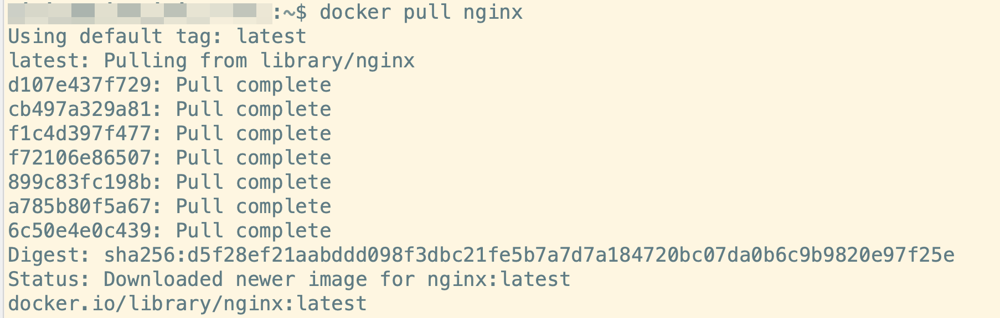

NAT模式Ubuntu Server下的Docker代理设置
VMWare或者VirtualBox安装Ubuntu Server后，如果ubuntu server需要通过宿主机(windows/Mac)代理(clash)访问Docker 或者 GitHub，需要在Ubuntu Server设置代理配置。
宿主机配置
首先，宿主机(windows/Mac)首先需要打开"允许来自局域网的连接"
mac配置

windows配置

虚拟机配置代理
普通代理
在ubuntu server配置代理:
~/.bashrc
1 | |
执行 source ~/.bashrc，这样系统启动之后，就可以自动使用代理。
docker代理
检查是否存在 /etc/systemd/system/docker.service.d/ 目录 如果不存在 需要先建立目录 (sudo mkdir -p /etc/systemd/system/docker.service.d/)
如果不存在配置文件（/etc/systemd/system/docker.service.d/proxy.conf）就新建配置文件，然后编辑该配置文件, 内容如下:
1 | |
然后执行如下命令：
1 | |
测试docker拉取镜像是否成功

拉取镜像成功。
总结：如果要在NAT网络模式下，实现虚拟机的代理上网，宿主机需要 允许来自局域网的连接, 虚拟机 需要分别在 ~/.bashrc和 docker对应的配置文件中添加对应的代理信息。